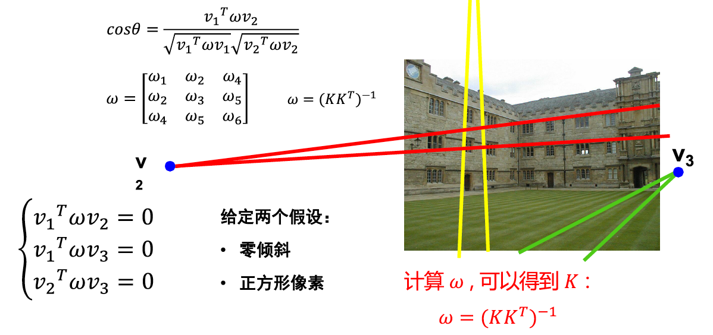
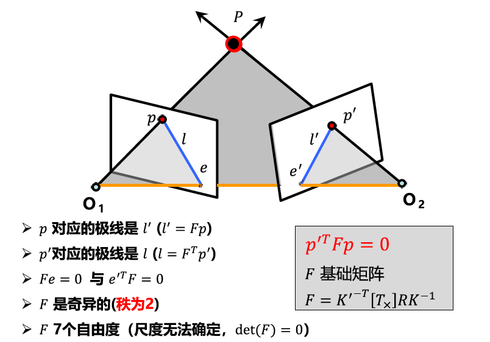

SfM & SLAM
根据北京邮电大学人工智能学院鲁鹏老师讲授的《计算机视觉之三维重建篇——深入浅出SfM系统与SLAM系统的核心算法》整理的笔记。
摄像机几何
针孔模型&透镜
- 针孔摄像机根据相似三角形，三维点 $P=[x, y, z]^T$ 到二维平面 $p'=[x', y']^T$ 的映射：$$x'=f\frac{x}{z}; y'=f\frac{y}{z}$$
- 透镜
光圈减小，图像越清晰，但是越暗。透镜将多条光线汇聚到胶片上，可以增加照片亮度。所有平行于光轴的光线都会汇聚到焦点，焦点到透镜中心的距离为焦距。
透镜问题：- 失焦：物体聚焦有特定距离；景深
- 径向畸变：图像像素点以畸变中心为中心点，沿着径向产生位置偏差，导致图像成像发生形变
摄像机几何
- 像素坐标系单位：$k, l: pixel/m; f:m \space$ 非方形像素 $\alpha, \beta: pixel$
- 摄像机模型
转换到齐次坐标，并加入摄像机偏斜 $\theta$ 、像机内外参数得到完整的摄像机模型：当 $K$ 为单位矩阵时为规范化摄像机，摄像机模型包括$5$个内参数+$6$个外参数=$11$个自由度。 平面点转换成欧式坐标写法：$$P'=MP_w=[m_1, m_2, m_3]^TP_w \rightarrow (\frac{m_1P_w}{m_3P_w}, \frac{m_2P_w}{m_3P_w})$$ - Faugeras1993定理：
- 投影变换
性质：点投影为点、线投影为线；近大远小；角度不再保持；平行线相交
其他摄像机模型
- 透视投影和弱透视投影摄像机
投影点 $P$ 到 $P\_$ 为从透视投影到弱透视投影弱透视投影当物体较小且较远时准确，常用于图像识别任务；透视投影对3D到2D映射的建模更准确，用于运动恢复结构或SLAM。
- 正交投影摄像机正交投影更多应用在建筑设计或工业设计行业
补充知识
- 线性方程组的解
- 线性方程组的最小二乘解
- 齐次线性方程组的解
- 齐次线性方程组的最小二乘解
- 非线性方程组的最小二乘解
摄像机标定
针孔模型 & 透镜摄像机标定问题
- 摄像机标定问题
摄像机标定即求解摄像机内、外参数矩阵，其内外参数矩阵描述了三维世界到二维像素的映射关系。 - 求解投影矩阵
- 提取摄像机参数注意： 世界坐标系的三维点不能位于同一平面！

径向畸变的摄像机标定
- 问题建模

- 标定求解
补充知识
- 2D平面上的变换
- 欧式变换
- 相似变换
- 透视变换
- 仿射变换
- 3D空间中的变换
- 欧式变换
- 透视变换
- 仿射变换
单视图重建
相机标定后，内外参数已知，也不能根据单视图测量值 $p$ 估算 $P$, 三维点可以位于视线中心和二维点定义的直线上的任何位置。
无穷远点、线与平面
- 2D平面上的直线
二维点 $x=[x_1, x_2, 1]^T$ 在直线 $l=[a, b, c]^T$上可表示为 $$l^Tx=0 或 x^Tl=0 或 ax_1+bx_2+c=0$$ - 两直线的交点
$$x=l \times l’$$ - 2D平面上的无穷远点
- 2D平面上的无穷远直线
- 3D平面上的直线
三维点 $x=[x_1, x_2, x_3, 1]^T$ 在面 $\Pi=[a, b, c, d]^T$上可表示为 $$\Pi^Tx=0 或 x^T\Pi=0$$ - 3D空间中的无穷远点
空间中平行线的交点为无穷远点 $x_\infty=[a, b, c, 0]^T$ - 3D空间中的无穷远平面
平行平面在无穷远处交于一条公共线，即无穷远直线；
两条或多条无穷远直线的集合定义为无穷远平面 $\Pi_\infty=[0, 0, 0, 1]^T$
影消点和影消线
- 变换公式
$H$ 为变换矩阵，点到点的变换公式：$p’=Hp$，直线到直线的变换公式：$l’=H^{-T}l$ - 影消点与影消线
影消点：三维空间中的无穷远点在图像平面上的投影点
影消线（视平线）：空间汇中的无穷远线
图像中两条直线的交点如果在影消线上；则这两条线是3D空间中的平行线
单视重构
- 两组平行线的夹角与影消点

- 单视图标定
- 单视图重构
$K$ 已知，相机参考系中的场景平面方向 $n=K^Tl_h$
注意：场景的实际比例无法恢复
单视图重构弊端：需要手动选择影消点和影消线，需要知道场景先验信息（点对应关系，线、面几何信息等）
三维重建基础与极几何
三维重建基础
摄像机标定与单视图重构
三角化
线性解法：非线性解法：然而实际应用中，两条直线通常不相交。而线性和非线性解法都需要知道 $K、R、T$。多视图几何的关键问题包括：- 摄像机几何：从一张或多张图像中求解摄像机内外参数
- 场景几何：通过2-多幅图寻找3D场景坐标
- 对应关系：已知一个图像中的二维点，如何在另一个图像中找到对应的二维点
极几何及基础矩阵
极几何
极几何描述了同一场景或物体的两个视点图像间的几何关系特例：- 平行视图
- 前向平移（无旋转）极几何约束：可以将搜索范围缩小到对应的极线上

- 平行视图
本质矩阵
本质矩阵对规范化摄像机拍摄的两个视点图像间的极几何关系进行代数描述
基础矩阵
基础矩阵对一般的透视摄像机拍摄的两个视点的图像间的极几何关系进行代数描述，刻画了两个相同场景图像在不同视图中的对应关系基础矩阵作用：已知 $F$，无需场景信息及摄像机内外参数即可建立两图像的对应关系；$F$ 包含摄像机内外参数信息，可应用于三维重构和多视图匹配
基础矩阵估计
基础矩阵有$7$个自由度，理论上7个点即可求解，但估计方法较复杂
八点算法
存在问题：- $W$ 中各个元素的数值差异过大
- SVD分解有数值计算问题
归一化八点法
归一化八点算法可以提高计算精度。对图像进行变换 $T$ (平移与缩放)，使得：原点 = 图像上点的重心;各个像点到坐标原点的均方根距离等于 $\sqrt{2}$ 。计算步骤：- 分别计算左图和右图的 $T$ 和 $T’$
- 坐标归一化：$q_i=Tp_i; q’_i=T’p’_i$
- 通过八点法计算矩阵 $F_q$
- 逆归一化 $F=T’^TF_qT$
单应矩阵
单应矩阵指空间平面在两个摄像机下的投影几何
单应矩阵推导
单应矩阵估计
单应矩阵性质
场景结构：- 基础矩阵表示两视图间的对极约束与场景结构无关，其仅依赖相机内外参数及相机间的旋转和平移
- 单应矩阵要求场景中的点位于同一平面；或两个相机之间只有旋转无平移
约束关系：
- 基础矩阵建立点和极线的对应关系
- 单应矩阵建立点和点的对应
双目立体视觉重建
基于平行视图的双目立体视觉
平行视图的三角测量：视差 $p_u-p_u’=\frac{B·f}{z}$，视差与深度$z$成反比
图像校正
图像校正步骤：
对应点搜索
相关匹配算法
归一化相关匹配算法
窗口大小的影响
窗口小：细节丰富但噪声多；窗口大视差图平滑噪声少但细节丢失相关法存在问题
透视缩短：遮挡；基线选择；同质区域；重复性模式以上需要引入更多约束解决对应点问题：- 唯一性约束：一张图像的任何点在另一张图像中最多只有一个匹配点
- 顺序约束（单调性约束）：左右视图中的对应点次序一致
- 平滑性约束：视差函数通常是平滑的（除了遮挡边界）
多视图重建
运动恢复结构问题
Structure from Motion(SfM)：通过三维场景的多张图像恢复出该场景的三维结构信息（如3D点云）以及每张图片对应的摄像机参数
三种典型的运动恢复结构任务
欧式结构恢复（摄像机内参已知，外参未知）
问题建模：
2视图求解方法：
其中本质矩阵分解方法如下：

欧式结构恢复歧义：恢复的机构与真实场景之间相差一个相似变换（旋转，平移，缩放）——度量重构（恢复的场景与真实场景之间存在相似变换的重构）
仿射结构恢复（摄像机为仿射相机，内外参数均未知）
问题建模：
基于因式分解的仿射结构恢复算法步骤：
- 数据中心化：减去图像点的质心
- 数据中心化的矩阵形式
- 因式分解获得运动与结构
总结
仿射结构恢复歧义
给定 $m$ 个相机，$n$ 个三维点，有 $2mn$ 个等式，$8m+3n-8$ 个未知量
透视结构恢复（摄像机为透视相机，内外参数均未知）
问题建模：
在相差一个 $4\times4$ 的可逆变换的情况下恢复摄像机运动与场景结构
代数方法（通过基础矩阵）
- 2视图代数方法
- 利用F估计摄像机矩阵
- n视图代数方法
- 2视图代数方法
捆绑调整（Bundle Adjustment, BA）
因式分解法假定所有点均可见，存在遮挡和建立对应点关系失败时不可用；代数法应用于2视图重建，易出现误差累积。捆绑调整为非线性最小化问题，使用牛顿法与列文伯格——马夸尔特法（L-M）求解：- 捆绑调整法优势：可以同时处理大量视图，也可以处理丢失的数据
- 捆绑调整法局限性：大量参数的最小化问题，需要良好的初始条件
- 捆绑调整法实际操作：常用作SfM的最后一步，分解或代数方法可作为优化问题的初始解
运动恢复结构(SfM)系统设计
PnP问题
- PnP问题描述
- P3P求解摄像机位姿
两视图重构
2视图欧式结构恢复求解第一步为求解基础矩阵 $F$，一般在进行此步之前先进行特征提取+特征匹配，再进行基础矩阵估计
- 特征提取
输入图片，输出尺度不变性的特征点（位置+每个特征的128维数据描述），SIFT特征提取过程如下： - 特征匹配
- RANSAC估计基础矩阵
SfM系统：基于增量法的多视图欧式重构（以OpenMVG为例）
预处理
图像特征点提取与匹配：输入图像集，输出几何校验后的特征点匹配结果- 计算潜在匹配对：提取特征点并计算特征描述符，利用近邻的特征点匹配方法进行特征点匹配
- 利用几何一致性过滤误匹配：估计基础矩阵 $F$ 和单应矩阵 $H$
增量法求解SfM
注意：- 第1步 OpenMVG里只包含两张图的track会被剔除
- 第3步 选取的边 $e$ 要求射线夹角中位数最大，且夹角不大于60不小于3
- 第8步3) 图像1的选择需要射线夹角大于2度，且重投影误差小于某个值
同时定位与建图(SLAM)系统设计
补充知识
- 词袋模型
- 基于词袋模型的图像检索
SLAM
- SLAM介绍
同时定位和建图（Simultaneous Localization and Mapping, SLAM）中的定位指传感器的位置和姿态，SLAM应用于定位、导航、避障、重建、交互 - 传感器分类
传感器可分为携带于机器人本体上的（如相机、激光风）和安装于环境中的（如导轨、二维码标志等）。摄像机作为传感器的一种，按照工作方式可分为单目（Monocular）、双目（Stereo）和深度相机（RGB-D） - 地图
地图指所有路标点的集合，地图是对环境的描述，但描述不固定，需要视SLAM的应用而定。 - SLAM开源方案
ORB-SLAM系统
- 系统组成
- 具体步骤
- 数据结构与数据库
- 跟踪
- 建图局部Bundle Adjustment举例：
- 回环修正回环候选帧检测：
- 数据结构与数据库